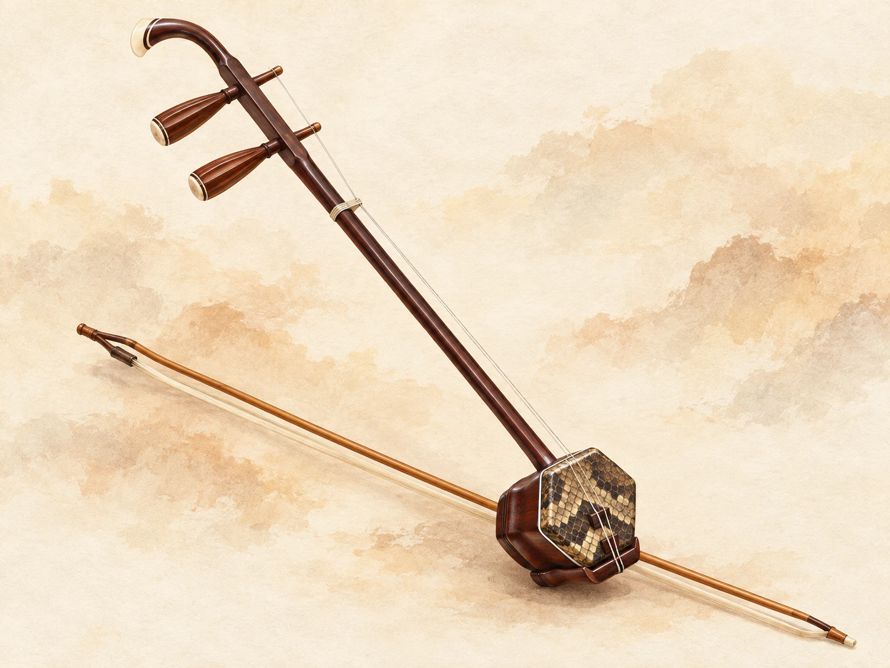

二胡小教室
調音器
關於二胡小教室課程、樂譜與紀錄，
課程、樂譜與紀錄，
放在同一個地方。
練琴時，先找到適合目前程度的曲目，再把需要加強的樂句分開練習。二胡小教室將分級課程、譜面工具和練習紀錄整理在一起，方便你接續上一次的進度。
遇到運弓、指法或節奏問題，可以向 AI 助教提問；有自己的樂譜，也能上傳、校訂，再進入跟譜練習。
第一次使用？從這裡開始練習工具
五項功能問答助教
詢問技巧與練習問題
練↗練習規劃
安排今天的練習單
譜↗掃描樂譜
從原譜到可編輯簡譜
聽↗音準跟譜
跟譜演奏與音準紀錄
記↗學習回報
查看打卡與練習紀錄
課程分級
第一級至第十級初級課程
從基本運弓、節奏與內外弦控制開始，練穩每一個音。
查看初級課程 ↗ 04—07中級課程
揉弦、換把與雙手配合，把技巧連成完整的樂句。
查看中級課程 ↗ 08—10高級課程
從自選曲深入風格與表現，磨練演出的穩定度。
查看高級課程 ↗開始練習
依照自己的進度選擇使用說明
常見問題
剛開始學二胡，可以使用嗎？
可以先從初級課程閱讀基本運弓、節奏與內外弦練習。持琴姿勢與實際動作仍建議請老師現場確認。
上傳樂譜後就能直接練習嗎？
請先將辨識結果與原譜對照，確認音高、時值、連弓與指法等記號。辨識可能有錯誤，校訂並保存後再進入跟譜練習。
音準跟譜需要什麼設備？
使用具備麥克風的手機或電腦，並允許瀏覽器使用麥克風。盡量在安靜的環境練習，減少背景聲音影響偵測。
AI 回答與回報可以作為考級成績嗎？
這些內容提供練習參考，並非正式檢定結果。曲目要求與評分方式，請以報考單位公布的規定及老師指導為準。